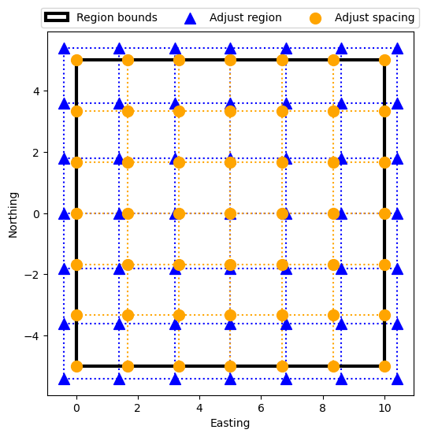
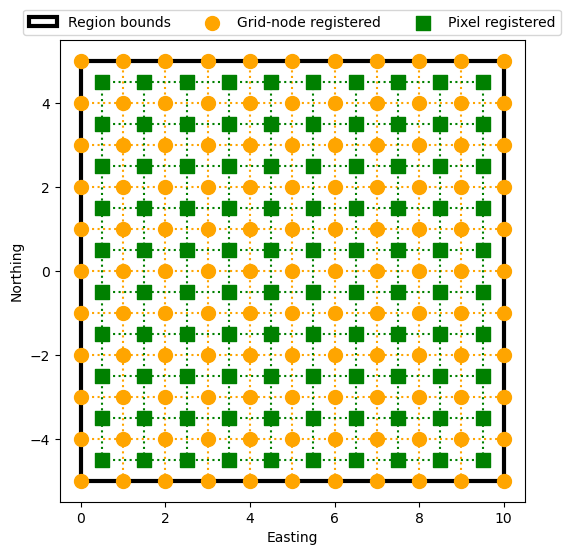
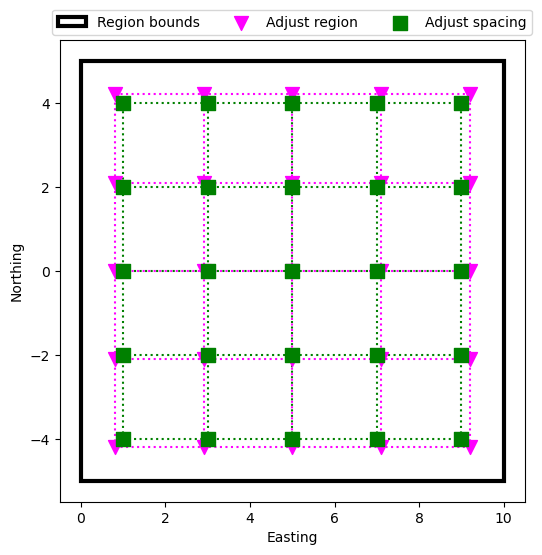

Regular grids and meshes#
Now that we learned how to make evenly spaced values with
bordado.line_coordinates, we could use numpy.meshgrid to
generate multidimensional arrays of values for things like coordinates of
regular grids and regular meshes. However, there are a few important details
that may be overlooked when doing so. Bordado can handle all of this for us
using function bordado.grid_coordinates. Let’s see how it’s used to make
coordinates for regular grids in 2 or more dimensions.
import bordado as bd
import matplotlib.pyplot as plt
Coordinates for 2D grids#
Function bordado.grid_coordinates combines
line_coordinates to generate sets of coordinates for grids.
For example, this is how we generate coordinates for a 2D grid:
coordinates = bd.grid_coordinates(region=(0, 10, -5, 5), spacing=2)
for i, c in enumerate(coordinates):
print(f"coordinate {i}:\n{c}\n")
coordinate 0:
[[ 0. 2. 4. 6. 8. 10.]
[ 0. 2. 4. 6. 8. 10.]
[ 0. 2. 4. 6. 8. 10.]
[ 0. 2. 4. 6. 8. 10.]
[ 0. 2. 4. 6. 8. 10.]
[ 0. 2. 4. 6. 8. 10.]]
coordinate 1:
[[-5. -5. -5. -5. -5. -5.]
[-3. -3. -3. -3. -3. -3.]
[-1. -1. -1. -1. -1. -1.]
[ 1. 1. 1. 1. 1. 1.]
[ 3. 3. 3. 3. 3. 3.]
[ 5. 5. 5. 5. 5. 5.]]
The first argument to grid_coordinates is called a region
in Bordado. It specifies the boundaries of the domain which contains the
grid. The number of elements in the region specifies the number of dimensions
of the output. There should be 2 values in the region per dimension of the grid.
So 4 values in region means we’re making a 2D grid. Hence, a tuple
of two 2D numpy arrays with the coordinates is returned.
What is a region?
The region will always have an even number of elements. Each pair is the minimum and maximum value along a dimension of the grid. In our example, the first coordinate is between 0 and 10 and the second between -5 and 5. For geographic coordinates (longitude, latitude), the region would represent the west, east, south, and north boundaries of the domain.
We can also specify different spacings for each dimension of the grid by passing
a tuple or list as the spacing argument:
coordinates = bd.grid_coordinates(region=(0, 10, -5, 5), spacing=(2.5, 2))
for i, c in enumerate(coordinates):
print(f"coordinate {i}:\n{c}\n")
coordinate 0:
[[ 0. 2. 4. 6. 8. 10.]
[ 0. 2. 4. 6. 8. 10.]
[ 0. 2. 4. 6. 8. 10.]
[ 0. 2. 4. 6. 8. 10.]
[ 0. 2. 4. 6. 8. 10.]]
coordinate 1:
[[-5. -5. -5. -5. -5. -5. ]
[-2.5 -2.5 -2.5 -2.5 -2.5 -2.5]
[ 0. 0. 0. 0. 0. 0. ]
[ 2.5 2.5 2.5 2.5 2.5 2.5]
[ 5. 5. 5. 5. 5. 5. ]]
The order of the spacing argument is the reversed order of the arguments in
the region. This is done for compatibility with how numpy specifies the shape
parameter of arrays.
Speaking of which, we can also specify the shape of the desired coordinate arrays instead of the spacing:
coordinates = bd.grid_coordinates(region=(0, 10, -5, 5), shape=(6, 11))
for i, c in enumerate(coordinates):
print(f"coordinate {i} (shape = {c.shape}):\n{c}\n")
coordinate 0 (shape = (6, 11)):
[[ 0. 1. 2. 3. 4. 5. 6. 7. 8. 9. 10.]
[ 0. 1. 2. 3. 4. 5. 6. 7. 8. 9. 10.]
[ 0. 1. 2. 3. 4. 5. 6. 7. 8. 9. 10.]
[ 0. 1. 2. 3. 4. 5. 6. 7. 8. 9. 10.]
[ 0. 1. 2. 3. 4. 5. 6. 7. 8. 9. 10.]
[ 0. 1. 2. 3. 4. 5. 6. 7. 8. 9. 10.]]
coordinate 1 (shape = (6, 11)):
[[-5. -5. -5. -5. -5. -5. -5. -5. -5. -5. -5.]
[-3. -3. -3. -3. -3. -3. -3. -3. -3. -3. -3.]
[-1. -1. -1. -1. -1. -1. -1. -1. -1. -1. -1.]
[ 1. 1. 1. 1. 1. 1. 1. 1. 1. 1. 1.]
[ 3. 3. 3. 3. 3. 3. 3. 3. 3. 3. 3.]
[ 5. 5. 5. 5. 5. 5. 5. 5. 5. 5. 5.]]
The order of the arguments is the same as for the spacing. Notice that the
shape of the coordinate arrays is the same as the input shape.
Adjustment of spacing or region#
Just like with line_coordinates, we can pass a spacing that
isn’t exactly a multiple of the dimensions of the region. In this case, the
spacing will be automatically adjusted to fit the given region exactly:
coordinates = bd.grid_coordinates(region=(0, 10, -5, 5), spacing=2.6)
for i, c in enumerate(coordinates):
print(f"coordinate {i}:\n{c}\n")
coordinate 0:
[[ 0. 2.5 5. 7.5 10. ]
[ 0. 2.5 5. 7.5 10. ]
[ 0. 2.5 5. 7.5 10. ]
[ 0. 2.5 5. 7.5 10. ]
[ 0. 2.5 5. 7.5 10. ]]
coordinate 1:
[[-5. -5. -5. -5. -5. ]
[-2.5 -2.5 -2.5 -2.5 -2.5]
[ 0. 0. 0. 0. 0. ]
[ 2.5 2.5 2.5 2.5 2.5]
[ 5. 5. 5. 5. 5. ]]
This is very useful when the exact spacing is not too important, but the
boundaries of the region must be preserved.
If the boundaries aren’t important, but the exact spacing is, we can also ask
grid_coordinates to adjust the region instead of the spacing:
coordinates = bd.grid_coordinates(
region=(0, 10, -5, 5), spacing=2.6, adjust="region",
)
for i, c in enumerate(coordinates):
print(f"coordinate {i}:\n{c}\n")
coordinate 0:
[[-0.2 2.4 5. 7.6 10.2]
[-0.2 2.4 5. 7.6 10.2]
[-0.2 2.4 5. 7.6 10.2]
[-0.2 2.4 5. 7.6 10.2]
[-0.2 2.4 5. 7.6 10.2]]
coordinate 1:
[[-5.2 -5.2 -5.2 -5.2 -5.2]
[-2.6 -2.6 -2.6 -2.6 -2.6]
[ 0. 0. 0. 0. 0. ]
[ 2.6 2.6 2.6 2.6 2.6]
[ 5.2 5.2 5.2 5.2 5.2]]
When to adjust="region"?
If the boundaries are important (for example, longitude should not be more
than 360), then adjust="spacing" (the default). But in this case the
spacing may not be exactly what you asked for.
If the exact spacing is important, but the boundaries are not, then
adjust="region".
Let’s visualize the difference between these two types of adjustment. To do so, we’ll first make two functions to make plotting the coordinates easier. Don’t worry too much about them.
def plot_region(ax, region):
"Plot the region as a solid line."
west, east, south, north = region
ax.add_patch(
plt.Rectangle(
(west, south),
east - west,
north - south,
fill=None,
label="Region bounds",
linewidth=3,
)
)
def plot_grid(ax, coordinates, color, marker, s=100, **kwargs):
"Plot the grid coordinates as dots and lines."
data_region = bd.get_region(coordinates)
ax.vlines(
coordinates[0][0],
ymin=data_region[2],
ymax=data_region[3],
linestyles="dotted",
color=color,
zorder=0,
)
ax.hlines(
coordinates[1][:, 1],
xmin=data_region[0],
xmax=data_region[1],
linestyles="dotted",
color=color,
zorder=0,
)
ax.scatter(*coordinates, color=color, s=s, marker=marker, **kwargs)
Now we’ll make coordinates using both functions and plot them:
region = (0, 10, -5, 5)
spacing = 1.8
coords_spacing = bd.grid_coordinates(region, spacing=spacing)
coords_region = bd.grid_coordinates(region, spacing=spacing, adjust="region")
plt.figure(figsize=(6, 6))
ax = plt.subplot(111)
plot_region(ax, region)
plot_grid(
ax, coords_region, label="Adjust region", color="blue", marker="^",
)
plot_grid(
ax, coords_spacing, label="Adjust spacing", color="orange", marker="o",
)
ax.set_xlabel("Easting")
ax.set_ylabel("Northing")
plt.legend(loc="upper center", ncols=3, bbox_to_anchor=(0.5, 1.08))
plt.show()

We can see from the plot that when adjusting spacing (orange points), the region is respected exactly. But when adjusting the region, it’s shifted in all directions to accommodate the chosen spacing. The center point is where both grids align.
Pixel registration#
We can also generate coordinate values at the center of the intervals instead
of at their borders (the default) by passing pixel_register=True:
coordinates = bd.grid_coordinates(
region=(0, 10, -5, 5), spacing=2, pixel_register=True,
)
for i, c in enumerate(coordinates):
print(f"coordinate {i}:\n{c}\n")
coordinate 0:
[[1. 3. 5. 7. 9.]
[1. 3. 5. 7. 9.]
[1. 3. 5. 7. 9.]
[1. 3. 5. 7. 9.]
[1. 3. 5. 7. 9.]]
coordinate 1:
[[-4. -4. -4. -4. -4.]
[-2. -2. -2. -2. -2.]
[ 0. 0. 0. 0. 0.]
[ 2. 2. 2. 2. 2.]
[ 4. 4. 4. 4. 4.]]
Notice that the region boundaries values aren’t included, and the first and last coordinates are half of the spacing away from the boundaries.
Let’s make a plot of a normal grid (often called “grid-node registered”) and a pixel registered grid for comparison:
region = (0, 10, -5, 5)
spacing = 1
coords_grid = bd.grid_coordinates(region, spacing=spacing)
coords_pixel = bd.grid_coordinates(region, spacing=spacing, pixel_register=True)
plt.figure(figsize=(6, 6))
ax = plt.subplot(111)
plot_region(ax, region)
plot_grid(
ax, coords_grid, label="Grid-node registered", color="orange", marker="o",
)
plot_grid(
ax, coords_pixel, label="Pixel registered", color="green", marker="s",
)
ax.set_xlabel("Easting")
ax.set_ylabel("Northing")
plt.legend(loc="upper center", ncols=3, bbox_to_anchor=(0.5, 1.08))
plt.show()

Automatic adjustment of the spacing or the region also works for pixel registered grids:
region = (0, 10, -5, 5)
spacing = 2.1
coords_pixel_spacing = bd.grid_coordinates(
region, spacing=spacing, pixel_register=True, adjust="spacing",
)
coords_pixel_region = bd.grid_coordinates(
region, spacing=spacing, pixel_register=True, adjust="region",
)
print("Adjust the spacing:")
for i, c in enumerate(coords_pixel_spacing):
print(f"coordinate {i}:\n{c}\n")
print("Adjust the region:")
for i, c in enumerate(coords_pixel_region):
print(f"coordinate {i}:\n{c}\n")
Adjust the spacing:
coordinate 0:
[[1. 3. 5. 7. 9.]
[1. 3. 5. 7. 9.]
[1. 3. 5. 7. 9.]
[1. 3. 5. 7. 9.]
[1. 3. 5. 7. 9.]]
coordinate 1:
[[-4. -4. -4. -4. -4.]
[-2. -2. -2. -2. -2.]
[ 0. 0. 0. 0. 0.]
[ 2. 2. 2. 2. 2.]
[ 4. 4. 4. 4. 4.]]
Adjust the region:
coordinate 0:
[[0.8 2.9 5. 7.1 9.2]
[0.8 2.9 5. 7.1 9.2]
[0.8 2.9 5. 7.1 9.2]
[0.8 2.9 5. 7.1 9.2]
[0.8 2.9 5. 7.1 9.2]]
coordinate 1:
[[-4.20000000e+00 -4.20000000e+00 -4.20000000e+00 -4.20000000e+00
-4.20000000e+00]
[-2.10000000e+00 -2.10000000e+00 -2.10000000e+00 -2.10000000e+00
-2.10000000e+00]
[ 2.22044605e-16 2.22044605e-16 2.22044605e-16 2.22044605e-16
2.22044605e-16]
[ 2.10000000e+00 2.10000000e+00 2.10000000e+00 2.10000000e+00
2.10000000e+00]
[ 4.20000000e+00 4.20000000e+00 4.20000000e+00 4.20000000e+00
4.20000000e+00]]
Notice that the spacing is adjusted to 2 and in the other case, the region is adjusted to keep the spacing as 2.1. Let’s make a plot of these two coordinate sets:
plt.figure(figsize=(6, 6))
ax = plt.subplot(111)
plot_region(ax, region)
plot_grid(
ax, coords_pixel_region, label="Adjust region", color="magenta", marker="v",
)
plot_grid(
ax, coords_pixel_spacing, label="Adjust spacing", color="green", marker="s",
)
ax.set_xlabel("Easting")
ax.set_ylabel("Northing")
plt.legend(loc="upper center", ncols=3, bbox_to_anchor=(0.5, 1.08))
plt.show()

Just like the case for grid-node registered coordinates, the middle point is the same for both grids, but their spacings are different.
Multidimensional grids and meshes#
Function grid_coordinates can also make grids of higher
dimensions. The only thing that needs to be done is add more elements to the
region. For example, a 3D grid will need 6 elements in its region (west, east,
south, north, bottom, top):
coordinates = bd.grid_coordinates(region=(0, 9, -3, 3, 6, 9), spacing=3)
for i, c in enumerate(coordinates):
print(f"coordinate {i}:\n{c}\n")
coordinate 0:
[[[0. 3. 6. 9.]
[0. 3. 6. 9.]
[0. 3. 6. 9.]]
[[0. 3. 6. 9.]
[0. 3. 6. 9.]
[0. 3. 6. 9.]]]
coordinate 1:
[[[-3. -3. -3. -3.]
[ 0. 0. 0. 0.]
[ 3. 3. 3. 3.]]
[[-3. -3. -3. -3.]
[ 0. 0. 0. 0.]
[ 3. 3. 3. 3.]]]
coordinate 2:
[[[6. 6. 6. 6.]
[6. 6. 6. 6.]
[6. 6. 6. 6.]]
[[9. 9. 9. 9.]
[9. 9. 9. 9.]
[9. 9. 9. 9.]]]
Now there will be 3 output coordinates and each of them will be 3D arrays.
We can also pass a shape instead of a spacing:
coordinates = bd.grid_coordinates(region=(0, 9, -3, 3, 6, 9), shape=(2, 3, 4))
for i, c in enumerate(coordinates):
print(f"coordinate {i}:\n{c}\n")
coordinate 0:
[[[0. 3. 6. 9.]
[0. 3. 6. 9.]
[0. 3. 6. 9.]]
[[0. 3. 6. 9.]
[0. 3. 6. 9.]
[0. 3. 6. 9.]]]
coordinate 1:
[[[-3. -3. -3. -3.]
[ 0. 0. 0. 0.]
[ 3. 3. 3. 3.]]
[[-3. -3. -3. -3.]
[ 0. 0. 0. 0.]
[ 3. 3. 3. 3.]]]
coordinate 2:
[[[6. 6. 6. 6.]
[6. 6. 6. 6.]
[6. 6. 6. 6.]]
[[9. 9. 9. 9.]
[9. 9. 9. 9.]
[9. 9. 9. 9.]]]
Everything else also works the same for N-dimensional grids, like pixel registration and automatic adjustment in case the spacing is not a multiple of the region. For example, this spacing will be rounded up to 3:
coordinates = bd.grid_coordinates(region=(0, 9, -3, 3, 6, 9), spacing=2.8)
for i, c in enumerate(coordinates):
print(f"coordinate {i}:\n{c}\n")
coordinate 0:
[[[0. 3. 6. 9.]
[0. 3. 6. 9.]
[0. 3. 6. 9.]]
[[0. 3. 6. 9.]
[0. 3. 6. 9.]
[0. 3. 6. 9.]]]
coordinate 1:
[[[-3. -3. -3. -3.]
[ 0. 0. 0. 0.]
[ 3. 3. 3. 3.]]
[[-3. -3. -3. -3.]
[ 0. 0. 0. 0.]
[ 3. 3. 3. 3.]]]
coordinate 2:
[[[6. 6. 6. 6.]
[6. 6. 6. 6.]
[6. 6. 6. 6.]]
[[9. 9. 9. 9.]
[9. 9. 9. 9.]
[9. 9. 9. 9.]]]
What’s next#
Now you know how to generate regular coordinates in 1 or more dimensions. But what if we have two points, and we need coordinates for points evenly spaced between these two points? Find out how to do that in “Profiles between two points”.
Have questions?
Please ask on any of the Fatiando a Terra community channels!